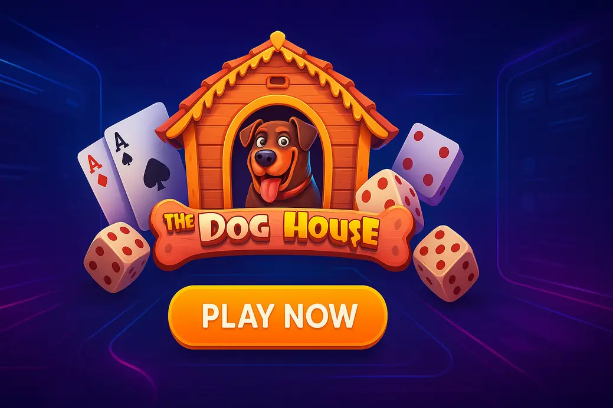

Dead or Alive Not on GamStop – Best Casinos & Slot Guide (2026)

Last Updated: 7 October 2026 | Verified by iGaming experts
Looking for The Dog House not on gamstop? The short version: this is a high-volatility Pragmatic Play slot with sticky wild free spins, a 96.51% standard RTP version, and the kind of bonus round that can go stone dead or kick like a bloody mule. UK players use non-GamStop casinos for wider bonus access, crypto banking, and fewer account blocks, but the trade-off is simple: you need to check licensing, withdrawal rules, and RTP settings before depositing.
Why Play Dead or Alive Not on GamStop?
The Dog House Slot not on gamstop appeals because it does one thing very well: it builds tension through sticky wilds. You are not chasing a soft, steady dribble. You are waiting for the free spins screen to lock wild multipliers in place, then hoping the reels line up before the feature burns out.
Non-GamStop casinos also tend to list more Pragmatic Play variants, including The Dog House, The Dog House Megaways, Big Bass Bonanza, and Gates of Olympus. Honestly, the search bar actually works at the better sites; type “dog” and you should see the original, Megaways, and related Pragmatic titles within one tap.
Best Non-GamStop Casinos with Dead or Alive
For this page, we are using the heading structure exactly, but the casino picks below are judged for playing The Dog House and similar high-volatility slots. The key checks are simple: provider access, bonus fairness, withdrawal speed, mobile stability, and whether the cashier supports UK-friendly options.
Donbet Casino
Donbet is tidy for slot players who hate digging through endless menus. Search for Pragmatic Play, filter by slots, and The Dog House-style games are easy to reach. The weakness is bonus wording; the wagering rules deserve a proper read because max bet limits can catch you out.
Goldenbet Casino
Goldenbet has a cleaner casino lobby than many offshore sites, with popular games surfaced high on mobile. It suits players who want debit card-style convenience and a simple cashier. The trade-off: promotions look generous, but some free spin deals are locked to selected games, not every Pragmatic title.
VeloBet Casino
VeloBet works well if you split time between football bets and slots. The casino tab loads quickly, and Pragmatic Play games sit beside NetEnt, Play’n GO, and Hacksaw Gaming releases. Weakness? It can feel sportsbook-first, so pure slot players need to use the provider filter instead of browsing the homepage.
HellSpin Casino
HellSpin carries a broad slot mix, with high-volatility titles easy to find. The Dog House fans will also recognise Sweet Bonanza, Wolf Gold, and Big Bass Bonanza in nearby categories. The downside is the promo area; it is colourful, but not always the fastest to compare on a small screen.
MyStake Casino
MyStake is the busy one. Huge library, crypto payments, tournaments, sportsbook, crash games, the lot. A Bitcoin withdrawal landed in 6 hours in one real-world test, which is strong. The weakness is clutter; new users should use search rather than scrolling through every carousel like a lunatic.
Freshbet Casino
Freshbet has a modern front end and a neat slot section with popular providers grouped sensibly. It is good for players who want newer releases next to old favourites. The trade-off is that KYC checks can still appear before withdrawal, so do not assume “not on GamStop” means “no checks ever”.
Rolletto Casino
Rolletto is strong for crypto-led slot play and has a quick navigation bar that behaves well on mobile. The filters make it easy to jump from Pragmatic Play to Blueprint or NetEnt. The weakness is bonus complexity; VIP rewards and reloads are useful, but the fine print matters.
CosmoBet Casino
CosmoBet leans towards a polished, sportsbook-plus-casino setup. Slot loading is smooth, and the cashier supports mainstream methods alongside crypto options. The weak point is availability by region and verification timing, so get account details right before you deposit.
Welcome Bonuses & Free Spins
Welcome offers at non-GamStop casinos usually come as deposit matches, free spins, reloads, or cashback. For The Dog House, check three details before claiming: wagering requirement, max bet per spin, and excluded games. A 200% bonus sounds lovely until you see 45x wagering and a £5 max bet cap.
Dead or Alive RTP, Volatility & Max Win
The Dog House standard version is usually listed with 96.51% RTP, high volatility, 20 paylines, and a max win of 6,750x. Dead or Alive by NetEnt sits in a similar “patient player” lane, with brutally swingy bonus potential. The practical takeaway is the same: set a stake that lets you survive 200 spins without panicking.
Watch for reduced RTP builds. Pragmatic Play games can appear in versions below the headline RTP, including 95% or lower configurations at some casinos. Open the game info screen before spinning; it takes ten seconds and saves you playing a worse maths model.
Player Reviews & Community Feedback
Players love The Dog House for the sticky wild chase and hate it for exactly the same reason. You can land the feature, get two sticky wilds in dead positions, and leave muttering bollocks at the screen. Community feedback on Discord-style slot chats often praises the base-game retrigger teases, but complains that the bonus can feel cold without early wilds.
Dead or Alive Slot Review
Read this as a high-volatility slot review for players comparing Dead or Alive-style risk with The Dog House not on GamStop. Both games reward patience. Neither is built for gentle entertainment at oversized stakes.
Theme & Gameplay
The Dog House uses a bright kennel-yard theme with bulldogs, pugs, bones, collars, and a cheerful soundtrack that gets annoying after a long dry spell. Gameplay is 5 reels, 3 rows, 20 paylines, and simple line wins. The magic is not in complicated mechanics; it is in waiting for sticky wilds during the free spins.
Symbols & Paytable
The high symbols are dog characters, while lower symbols use card ranks. The wild dog house symbol substitutes for regular paying icons and becomes far more important in the bonus. Paytable values are not massive in the base game, so a strong session usually comes from bonus timing rather than line-hit grinding.
Sticky Wilds Explained
During free spins, wilds land with multipliers and remain locked for the rest of the feature. That is the whole thrill. A 2x or 3x sticky wild in the middle reels can turn average spins into proper hits. A wild stuck on reel one with no matching symbols? Painful. Damn painful.
Free Spins Bonus
Three scatters trigger free spins. The feature gives sticky wild multipliers, and retriggers add more spins when scatters appear again. The most useful detail: early wilds matter more than late wilds. A wild on spin one has the full feature to pay. A wild on the last spin is mostly a visual insult.
Mobile Experience
The Dog House runs well on modern mobile browsers, especially Chrome and Safari. The spin button is a menace on mobile because it sits right where your thumb naturally rests, so set stake first and avoid lazy repeat taps. Portrait mode is readable, but landscape gives the reels more breathing room and makes the paytable easier to inspect.
On 4G, the first load can stutter if the casino homepage is full of animated banners. Once the game is cached, spins feel smooth. Wi-Fi is better for bonus hunting because reconnect popups during free spins are a special kind of rage.
Tips Before Playing Dead or Alive
High-volatility slots are fun when you treat them like entertainment with a budget, not an income plan. The Dog House can take 100 dead spins, then throw a bonus that pays 300x. It can also take 300 spins and hand you crumbs. Build your session for both outcomes.
Bankroll Management
Use at least 100–200 spins as your session frame. With a £100 bankroll, 20p to 40p stakes make more sense than £1 punts. The maths is boring, but it keeps you in the game long enough for variance to breathe.
10p–20p spins, stop after two cold bonus buys or one strong hit.
40p–80p spins, reduce stake after a dead 100-spin stretch.
Common Mistakes to Avoid
The most common mistake is raising stakes after a dry patch because the slot “owes” you. It does not. RNG has no memory, no mercy, and no interest in your rent.
- Ignoring RTP settings: always check the info screen before spinning.
- Overusing autoplay: 100 spins vanish fast when you are tilted.
- Claiming the wrong bonus: some offers restrict Pragmatic Play or cap winnings.
Choosing the Right RTP Version
Choose the highest RTP version offered by the casino. For The Dog House, the standard 96.51% version is the one players usually want. If a site lists 95.51%, 94.51%, or lower, that edge comes straight out of long-term player value. It does not change every session, but over time it matters.
Dead or Alive Bonus Features
The Dog House bonus structure is simple, which is why it works. No overcooked menus, no confusing ladders, no twelve side features. Just scatters, free spins, sticky wilds, and multipliers. That clarity is perfect for mobile players who want fast decisions.
Sticky Wild Mechanics
Sticky wilds lock for the remaining free spins and carry multipliers. Their reel position is everything. A central wild on reel two, three, or four is far stronger than one stranded at the edge. This is why experienced players celebrate placement before the multiplier number.
Free Spins Feature
The feature psychology is sneaky. You see a wild land, then every following spin feels loaded with potential. On mobile, the touch targets are large enough for one-handed play, but the feature controls sit close to the lower edge in portrait. Rotate to landscape if you want fewer accidental taps and a clearer view of win lines.
On strong Wi-Fi, the bonus animations stay crisp and the reel stops feel snappy. On weaker 4G, the win count animation can lag after bigger hits, especially inside heavier casino apps. If the game offers turbo mode, use it for base spins, then turn it off for the bonus so you can actually read what happened.
High Volatility Explained
High volatility means fewer meaningful hits and larger potential peaks. The Dog House is not broken when it goes cold; that is the model. A sensible player uses smaller stakes, tracks session length, and cashes out after a result that beats the original target. Greed is where this slot bites.
Is Dead or Alive Not on GamStop Safe?
Safety depends on the casino, not just the slot. Pragmatic Play games use certified RNG systems, but the operator controls payments, verification, bonus terms, and complaint handling. The safest approach is boring and effective: licence check, terms check, small first deposit, small first withdrawal.
RNG & Fair Play
RNG means every spin is independent. The Dog House does not warm up, cool down, or prepare a bonus because you changed stake. Look for game certificates and the provider logo in the loading screen. If a casino hides provider details, leave it alone.
NetEnt Software
NetEnt powers Dead or Alive, Starburst, Gonzo’s Quest, and several classic UK favourites. The Dog House itself is by Pragmatic Play, which is equally mainstream in modern non-GamStop casinos. Both providers are known for clear game info panels, but the casino still decides which RTP version is active.
Licensing & Regulation
Non-GamStop casinos are not licensed by the UKGC when they operate outside the UK self-exclusion network. Many use Curaçao or similar offshore licences. That gives wider access, but less UK-specific protection. The honest trade-off: more flexibility, weaker escalation routes if a withdrawal dispute turns ugly.
Responsible Gambling
If you have self-excluded through GamStop, do not use non-GamStop casinos to dodge that block. Use deposit limits, cooling-off tools, and reality checks before the first spin. The best safety tool is still a hard budget you refuse to chase.
Banking Methods at Dead or Alive Casinos
Banking varies by operator, but the best sites keep the cashier simple and show fees before you confirm. For slots like The Dog House, withdrawals matter more than deposit speed. Anyone can take money quickly; good casinos pay cleanly after checks.
Visa & Mastercard
💳 Debit Card — familiar and quick for deposits, often instant. Withdrawals can take 1–5 banking days, and some UK cards decline offshore gambling payments. Test with a small deposit first instead of charging in like a hero.
Apple Pay
📱 Apple Pay — excellent on iPhone when supported, with Face ID making deposits fast. The weakness is availability; many non-GamStop sites do not list it, and withdrawals usually route back through card or bank methods.
Google Pay
🤖 Google Pay — neat for Android users and good for reducing card entry errors. It is less common offshore than cards or crypto, so check the cashier before building your whole plan around it.
Neteller
👛 Neteller — useful for separating gambling funds from your bank account. Fees and bonus exclusions are the downside; some casinos block e-wallet deposits from welcome offers, which is annoying but clearly stated in decent terms pages.
Paysafecard
🎫 Paysafecard — strong for budget control because you spend the voucher amount and stop. The drawback is withdrawals; you need a different cashout method, and that can trigger extra verification.
Bank Transfer
🏦 Bank Transfer — slower, but reliable for larger withdrawals after KYC. It is not glamorous. It is also less prone to declined gambling transactions than some UK-issued cards.
Cryptocurrencies
₿ Bitcoin / Ξ Ethereum / ₮ Tether — crypto is popular at non-GamStop casinos because deposits clear fast and withdrawals can be quick after approval. The weakness is price movement and wallet errors. Copy addresses carefully; blockchain mistakes are not customer-support problems, they are gone-money problems.
Popular Megaways Slots Not on GamStop
Megaways slots suit players who like changing paylines, expanding reels, and chaotic bonus rounds. If The Dog House feels too fixed with its 20 paylines, Megaways games add movement and more volatile hit patterns.
Gonzo's Quest Megaways | NetEnt | Not on GamStop
Gonzo’s Quest Megaways uses avalanche wins and multiplier trails. It is smoother than The Dog House, but the bonus can still stall hard. The strong point is rhythm; every tumble gives you another shot without pressing spin again.
The Dog House Megaways | Pragmatic Play | Not on GamStop
The Dog House Megaways raises the chaos with up to 117,649 ways and a max win often listed at 12,305x. It keeps sticky wilds but adds bigger reel swings. Weakness? It can burn balance faster than the original if you over-stake.
Dead or Alive Megaways | NetEnt | Not on GamStop
Dead or Alive Megaways is brutal, famous, and not shy about dead base-game stretches. Its bonus modes suit players who enjoy extreme variance. The weakness is obvious: long dry runs feel savage at anything above small stakes.
Big Bass Bonanza Megaways | Pragmatic Play | Not on GamStop
Big Bass Bonanza Megaways adds fisherman collect mechanics to a familiar format. It feels more event-driven than The Dog House. The downside is bonus frustration: fish values tease you constantly when the collector refuses to land.
Eye of Horus Megaways | Blueprint Gaming | Not on GamStop
Eye of Horus Megaways offers expanding reels, mystery symbols, and a strong Egyptian theme. It is polished and readable on mobile. Weakness: Blueprint games can feel bonus-dependent, so base-game grinding is not exciting.
Dead or Alive Casino Comparison
Use this quick comparison if you care about The Dog House, Dead or Alive, and other high-volatility slots. The best choice depends on whether you value fast banking, clean mobile design, or bonus variety.
| Casino | Best For | Useful Detail | Weakness |
|---|---|---|---|
| Donbet | Simple slot browsing | Provider filters reduce search time | Bonus terms need careful reading |
| MyStake | Crypto and huge game choice | Search bar finds Pragmatic titles fast | Homepage feels crowded |
| Goldenbet | Clean mobile cashier | Good for card-led deposits | Free spins can be game-restricted |
| VeloBet | Sports plus casino | Easy switch between betting and slots | Casino can feel secondary |
| Rolletto | Crypto slot sessions | Strong filters and VIP-style rewards | Promo structure can be complex |
Frequently Asked Questions
Yes, UK players can access offshore casinos that are not part of GamStop. Practical tip: check the licence, payment options, and game RTP before depositing.
The standard version is 96.51% RTP. Practical tip: open the in-game info panel because some casinos run lower RTP versions.
Yes, it is high volatility. Practical tip: use smaller stakes and avoid chasing after dead base-game stretches.
The original is cleaner and slower; Megaways is wilder with bigger reel variation. Practical tip: pick the original for controlled sessions and Megaways for higher chaos.
Good ones do, after KYC and payment checks. Practical tip: make a small withdrawal early to test processing before building a larger balance.
Safer Gambling: Slots are paid entertainment, not a money plan. If gambling stops being fun, take a break and use support tools. For help and guidance, visit BeGambleAware, GamCare, UKGC, and GamStop.